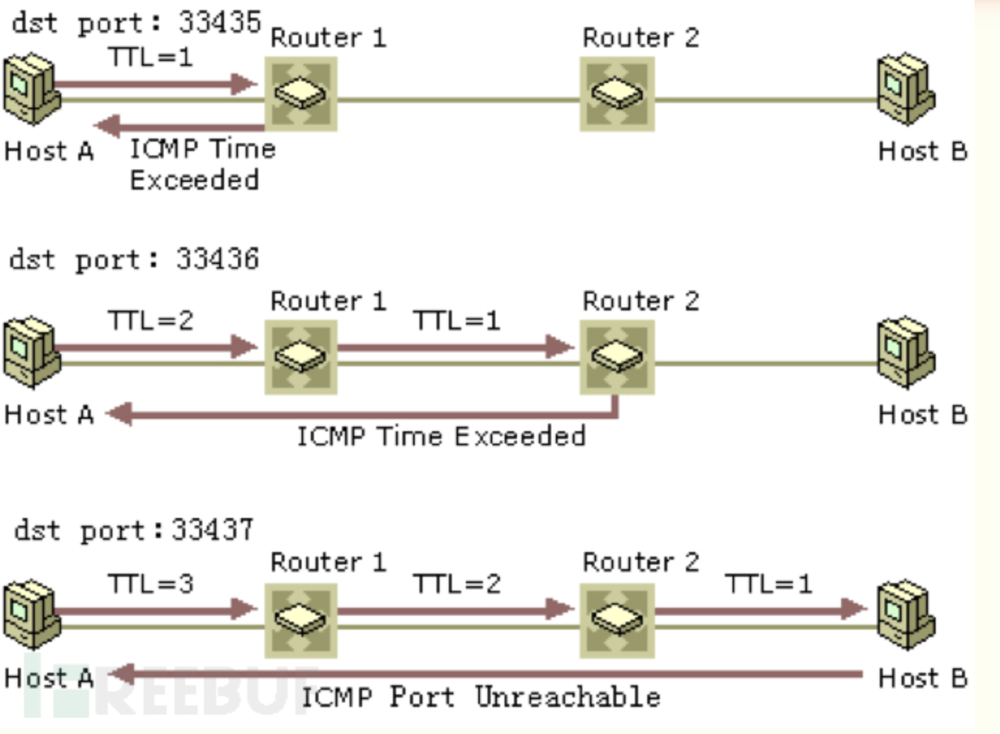
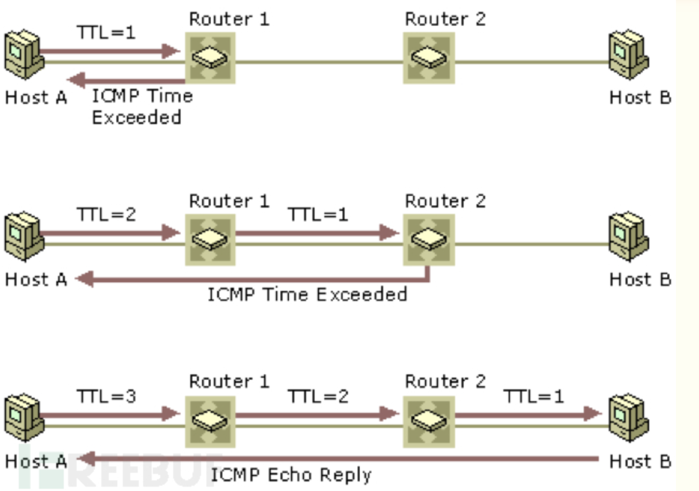

Ping & Traceroute Command - 课堂笔记
Contents
1. Ping and Tracert Test
A number of factors contribute to how fast your connection to our servers is, including:
- Your computer health
- The connection you have to your ISP (internet service provider)
- The number of network hops between your ISP and our servers
- The amount of traffic our servers are currently having
Running a ping test can help you determine if your website is slow because of a connection issue. If it is, then running a traceroute test can help you to determine where in the connection there is a slowdown.
2. Traceroute
A traceroute provides a map of how data on the internet travels from its source to its destination. When you connect with a website, the data you get must travel across multiple devices and networks along the way, particularly routers.
A traceroute displays the path that the signal took as it traveled around the Internet to the website. It also displays times which are the response times that occurred at each stop along the route. If there is a connection problem or latency connecting to a site, it will show up in these times. You will be able to identify which of the stops (also called ‘hops’) along the route is the culprit.
2.1. How To Read a Traceroute Report
|
|
| Hop Number | RTT Attempt 1 | RTT Attempt 2 | RTT Attempt 3 | Hop Details |
|---|---|---|---|---|
| 1 | 2ms | 1ms | 1ms | 10.0.0.1 |
| 2 | 10ms | 10ms | 10ms | 96.120.40.245 |
| 3 | 10ms | 11ms | 12ms | 96.110.175.85 |
Do You See an Asterisk * ? What Does It Mean?
The most common issue you will see with a traceroute is a timeout response, which is represented by an asterisk (*). These happen quite frequently and for a variety of different reasons. When you see an asterisk, it will mean one of the following things:
- Single Asterisk on a Hop: This means that the request timed out on just one of the three attempts. This can be a sign that there is an intermittent problem at that hop.
- Three Asterisks, Then Failure: If you see all three attempts at a hop have asterisks and then the traceroute errors out, it means that the hop is completely down.
- Three Asterisks, Then Success: If you see three attempts at a hop failing but then the rest of the traceroute continues without an issue, that is actually not a problem at all. This simply means that probably the packets arrived at a router with a firewall that prevents traceroute online requests.
如果RTT的位置出现了星号（*），表明数据包在期望的时间窗口内没有返回。
- 一个或两个星号出现在单个跃点上，并不一定表明数据包丢失了。许多互联网路由器有意丢弃ping和路由追踪的数据包，但并不影响使用这些路由器的应用程序。这一招称为ICMP（网控协议）限流术，用来使路由器免遭拒绝服务（DoS)攻击。
Checking the Hop Times
The times listed in the RTT columns are the main thing you want to look at when evaluating a traceroute. Consistent times are what you are looking for. There may be specific hops with increased latency times but they may not indicate that there is an issue. You need to look at a pattern over the whole report. Times above 150ms are considered to be long for a trip within the continental United States. (Times over 150ms may be normal if the signal crosses an ocean, however.) but issues may show up with very large numbers.
理论上讲，RTT值小于150ms将不会影响网络应用。很多应用在延时远高于150ms的时候也跑得挺欢，但150ms可以当成合理的上限，通常情况下是低于100ms的。 网络传输延时，主要受限两端的物理光纤距离。如果两地相隔好几千里，受到光速的限制，100-120ms的延时是可以接受的。
2.2. Implementation Traceroute
看看 traceroute 使用什么数据包:
On Windows, tracert sends ICMP Echo Request packets, rather than the UDP packets traceroute sends by default.
On Unix-like operating systems, traceroute sends, by default, a sequence of User Datagram Protocol (UDP) packets, with destination port numbers ranging from 33434 to 33534; the implementations of traceroute shipped with Linux, FreeBSD and macOS include an option to use ICMP Echo Request packets (-I), or any arbitrary protocol (-P) such as UDP, TCP using TCP SYN packets, or ICMP. traceroute
具体过程如下:
The time-to-live (TTL) value, also known as hop limit, is used in determining the intermediate routers being traversed towards the destination. Traceroute sends packets with TTL values that gradually increase from packet to packet, starting with TTL value of one. Routers decrement TTL values of packets by one when routing and discard packets whose TTL value has reached zero, returning the ICMP error message ICMP Time Exceeded.[10] For the first set of packets, the first router receives the packet, decrements the TTL value and drops the packet because it then has TTL value zero. The router sends an ICMP Time Exceeded message back to the source. The next set of packets are given a TTL value of two, so the first router forwards the packets, but the second router drops them and replies with ICMP Time Exceeded. Proceeding in this way, traceroute uses the returned ICMP Time Exceeded messages to build a list of routers that packets traverse, until the destination is reached and returns an ICMP Destination Unreachable message if UDP packets are being used or an ICMP Echo Reply message if ICMP Echo messages are being used.
Linux traceroute 实现原理

- 从源地址发出一个UDP探测包到目的地址，并将TTL设置为1；
- 到达路由器时，将TTL减1；
- 当TTL变为0时，包被丢弃，路由器向源地址发回一个ICMP超时通知（ICMP Time Exceeded Message），内含发送IP包的源地址，IP包的所有内容及路由器的IP地址；
- 当源地址收到该ICMP包时，显示这一跳路由信息；
- 重复1～5，并每次设置TTL加1；
- 直至目标地址收到探测数据包，并返回端口不可达通知（ICMP Port Unreachable）；
- 当源地址收到ICMP Port Unreachable包时停止traceroute。
注：
Linux和Mac OS等系统使用UDP包进行探测，目标端口号默认为33434，每次探测目标端口号加1。Traceroute故意使用了一个大于 30000 的目标端口号，以保证目标地址收到数据包后能够返回一个“端口不可达”的 ICMP 报文，于是源地址就可将端口不可达报文当作跟踪结束的标志。
Traceroute每跳默认发送3个探测包（发包的数量可通过-q进行设置），探测包的返回会受到网络情况的影响。如果防火墙封掉了ICMP的返回信息，那么相应的延时位置会以*显示。如果某台网关阻塞或者某台DNS出现问题，那么相应行的延时会变长。可以加-n 参数来避免DNS解析，以IP格式输出数据。
每个探测包都有唯一的标识号，使得Traceroute能够识别返回的包。UDP数据包使用递增的目标端口号进行标识。
Windows tracert 实现原理

- 从源地址发出一个ICMP请求回显（ICMP Echo Request）数据包到目的地址，并将TTL设置为1；
- 到达路由器时，将TTL减1；
- 当TTL变为0时，包被丢弃，路由器向源地址发回一个ICMP超时通知（ICMP Time Exceeded Message），内含发送IP包的源地址，IP包的所有内容及路由器的IP地址；
- 当源地址收到该ICMP包时，显示这一跳路由信息；
- 重复1～5，并每次设置TTL加1；
- 直至目标地址收到探测数据包，并返回ICMP回应答复（ICMPEcho Reply）；
- 当源地址收到ICMP Echo Reply包时停止tracert。
注：
Windows系统使用ICMP请求回显（ICMP Echo Request）数据包进行探测，源地址以目的地址返回的ICMP回应答复（ICMP Echo Reply）作为跟踪结束标志。
Traceroute每跳默认发送3个探测包。在未能到达路由器或未返回ICMP超时通知的情况下，相应的延时位置会以*显示。
每个探测包都有唯一的标识号，ICMP数据包使用seq进行标识
参考:
- traceroute - Wiki
- What is Traceroute: What Does it Do & How Does It Work?
- Why Is My Server Slow / How Do I Run a Ping and Tracert Test? | InMotion Hosting
- How to Read a Traceroute | InMotion Hosting
- 看懂tracert数据 - 简书
- How to Read a Traceroute: Step By Step Tutorial
- Meaning of * * * in the Output of traceroute | Baeldung on Linux
- traceroute命令详解 - 马昌伟 - 博客园
- Working of Traceroute using Wireshark - Hacking Articles
Author David
LastMod 2023-06-23